Dumpling Swap Dumpling Swap 是一个单产农业项目，由一群在 DeFi 领域拥有丰富经验的热情软件开发人员开发。我们的使命是通过提供强大的 DeFi 生态系统来创建一个经济上可持续的单产农
DuneSwap Duneswap 是 Oasis Emerald ParaTime 网络原生的自动化做市商/去中心化交易所。 DUNE 是平台的原生代币，可以通过耕种/质押或交易获得。 DUNE 是根据在 Oasis Emerald ParaTime 上通过 Distributor 和/或 Vaults 开采的时
Dungeons and Finance Dungeons & Finance 正在将角色扮演游戏带到 Polygon Network。在 Encounters 中通过单产农业开始您的冒险之旅，以获得足够的设备并面对地下城的挑战。 我们是一家独立视频游戏
DWorld DWorld 是 Fantom 网络上基于 OBOL 代币的去中心化储备货币协议。每个 OBOL 代币都由 DWorld 国库中的一揽子资产（例如 USDC、OBOL-FTM LP 代币等）支持，赋予其不能低
Dynamis Finance 在 Polygon 上运行的全面革命性 DeFI 平台，建立在力量、潜力和能力之上。 这些原则强调了我们对 Dynamis Finance 的愿景——一个让用户通过探索去中心化金融的全部潜力来实现财
Eagle.Farm Eagle Farm 的概念是独一无二的，它是一个收益农场，不为任何去中心化交易所 (DEX) 提供流动性，因为这就是 Mouse.Farm 和 Toad.Farm 服务的目的。 相反，这个收益农场的目的是成为 Mouse 和
Eaglenest.Finance Farmhub 生态系统目前由三个农场组成；两个养殖场，一个饲养场。 TOAD 和 MOUSE 代币可以通过为去中心化交易所（DEX）提供流动性来获得。 流动性提供者将获得这些代
EagleSwap Eagle Vision ADA，桥接 BSC-ADA 的 DeFi 应用程序的完整生态系统。由智能合约支持的数字应用程序的多链和跨链解决方案 BSC-ADA DEX (EagleSwap) 多链孵化器，Launchpad 将新的 ADA 项
Earth Farm #BSC 上的自动流动性收购收益农场和 AMM 具有独特的通货紧缩机制 🌍月亮农场二层🌍作为社区支持农业 (CSA) 农场成立于 1995 年，我们相信种植有营养（和美味！）水果和
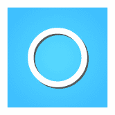 Eartha Eartha dApp 是一个 DeFi dApp，它允许任何人使用为 B2B 交易创建的特殊 DeFi 代币“Eartha Token(EAR)”轻松发送以法定货币为基础的代币，例如欧元、
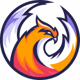 EasyFi Network EasyFi 是@ethereum 上用于数字资产的通用第 2 层#DeFi 借贷协议 建立在 Compound 的可靠代码库和#PoweredByMatic 之上，它提供更快、低成
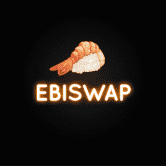 EbiSwap Finance EbiSwap 是基于 Polygon 网络的下一代高价值农业协议。在 Rugdoc.io 上进行 KYC 验证。通过我们精心策划的代币经济学，EbiSwap 旨在成为一种以价值为导向且经济可持续的分
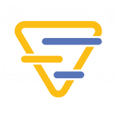 EchoSwap EchoSwap 是 Echelon DAO 正在开发的众多产品之一。 EchoSwap 是一款创新的 pancakeswap 作品，未来还会有各种新功能！ EchoSwap ALPHA 现已上线，用户可以添加 LP、在 ECHO 农场中质押 LP 和/或仅质押 ECHO 并
Eclair Farm DonutFarm.Finance 是在币安智能链 (BSC) 上获得最高奖励的分层收益农业自动复利项目，为 DONUT 和 ECLAIR 代币的持有者和用户提供收益聚合。为了促进收益农业和复利过程的自动化，Do
Eclair Finance Eclair Finance 是基于币安智能链的通货紧缩代币。 Eclair Finance 代币还有很多其他规格。您可以在我们的文档中找到它们。Eclair Finance 是 Binance 智能链上的 Yield Farm，使用 PantherSwap 路
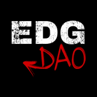 EDG DAO EDGDAO 旨在成为一个游戏金融 DAO。主要代币 EDG 将用于治理。早期的 EDG 持有者将在 Fork OHM 模型中获得巨大收益。BSC 上未经授权的 OHM 分叉。我们保留不审查需要数
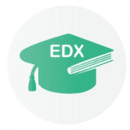 Education Exchange Education Exchange 是在币安智能链上运行的去中心化交易所，具有许多其他功能，可让您赚取和赢取代币。它速度快，价格便宜，任何人都可以使用。 特征 贸易 该交易所是一
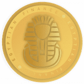 Egyptian Finance 我们为 Polygon Network 社区带来了一个经典且广为人知的 Yield Farming 项目。我们最初的智能合约基于经典的 MasterChefV2,DeFi 领域正在见证加密领域的指数级增长和普及，越来越多的投资者对其
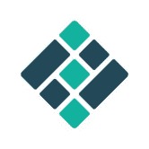 Eidoo 它声称是一个完全可投诉的非托管钱包，允许用户存储、交换和交易主要的加密资产。 Eidoo 旨在让用户轻松访问一系列 DeFi 服务和工具，包括内置的 Hybrid Exchange 和一个参与
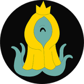 Eldritch Finance Eldritch Finance 是一种独特的收益优化器，它提供通货紧缩机制，以确保本地代币 ELDR 的供应不断减少。凭借独特的耕种机制，用户可以通过 HODL 乘数来增加收入。每个 epoch 由 1
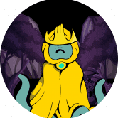 Eldritch Finance v2 Eldritch Finance -通货紧缩 - Yield Farm - HODL 乘数 - 自动回购 - 以太坊反思 - LP Burn - 更多！ Eldritch Finance v2 是原始代币的重生层。它为 Fantom 上的单产农场提供了前所未有的功能。 5% 的转账费
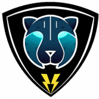 ELECTRA Electra 是一种基于币安智能链 (BSC) 的通货紧缩、社区驱动的 BEP-20 代币。它于 2021 年 5 月 22 日推出。每笔交易都有两个功能：基于币安智能链 (BSC) 的通缩、社区驱动的 BEP-20 代币。
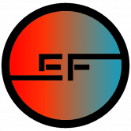 Elementic Finance Elementic Finance 是 Polygon (Matic) 网络上的下一代去中心化金融 (DeFi) 和收益农场应用程序。有没有想过工程团队如何建立有效的 PCB 设计流程？这个新系列展示了电子系统设计团队如何构
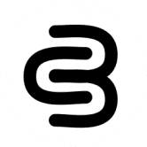 Elena Protocol USE 是一种去中心化的算法稳定币。以此为基础，构建新的数字经济市场。 USE 由 Elena 管理，由 Oasis Vault 支持，并且USE & ELENA 持有者可以通过此页面将他们的 USE & ELENA 兑换
Elephant Money ELEPHANT.MONEY STABLE 是一种永不过时的方式，可让您的投资组合获得复合利润。锁定你的收益。使用 Reserve 铸造 Elephant Money Stable (TRUNK)。铸造和赎回 TRUNK 只需 1% 的低手续费。 TRUNK 以固定
Eleven Finance 十一金融是一个跨链收益优化生态系统。我们在 Binance Smart Chain 上推出，现在也在 Polygon 上上线。我们努力在每个平台上开发最高 APY 的金库，并通过简化的费用结构将最大的
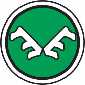 Elk Finance 麋鹿金融：DeFi 网关。 Elk Finance 是一个用于跨链流动性的去中心化网络。 Elk 生态系统使得跨网络交换加密货币和与智能合约无缝交互成为可能，无需复杂且昂贵
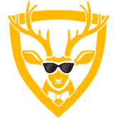 ElkDeFi Finance ElkDeFi 是运行在币安智能链上的最新一代 Yield Farm 和 AMM 去中心化交易所，具有许多独特和创造性的功能。我们的灵感来自长期的收获锁定，但我们可以更好地进行收获锁
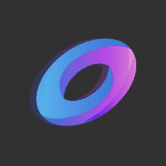 Ellipsis Finance Ellipsis Finance 作为 Curve Finance 的授权分支于 2021 年 3 月正式上线。 Ellipsis 团队将得到 Curve Finance 团队的支持，并将致力于 Curve Finance 的核心价值观：去信任和去中心化的架构、零存款或取款费用、
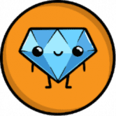 Gemstones.Finance Gemstones Finance通过优化其可持续性、资本效率和最重要的安全性平台，正在彻底改变产量农业体验。它是多边形网络上的DeFi Dapp，结合了智能合
Ghoul Finance GhostDAI ($gDAI) 是一种稳定币，以您持有的加密资产为抵押品。 您可以将您的加密资产添加到个人保险库中，并在 gDAI 中借入其价值的 2/3。 花费你的 gDAI，将它们换
GoatSwap 山羊交换 (GOAT) 是币安智能链上的 AMM & Yield Farming 平台。 GoatSwap 由一个专门的团队构建，旨在在 BSC 上创建 G.O.A.T AMM & Yield Farm。 $山羊是我们平台的本地令牌。在山羊队伍上桩，


 的协议 - 一种 0% 利息的稳定币，以您持有的加密资产为抵押品。")